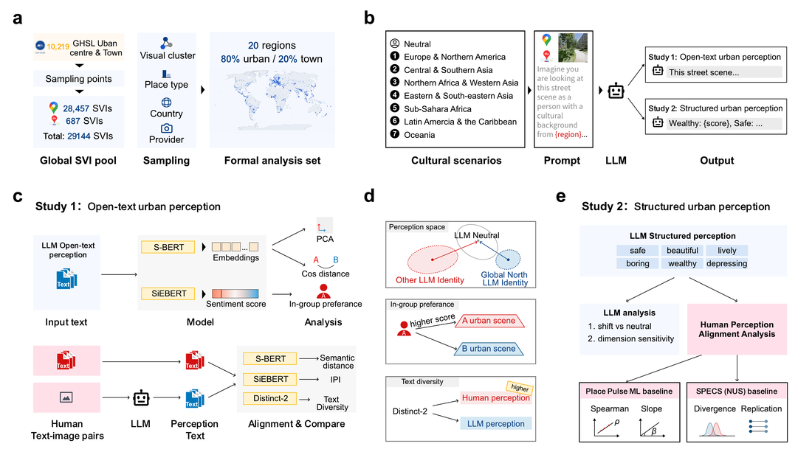
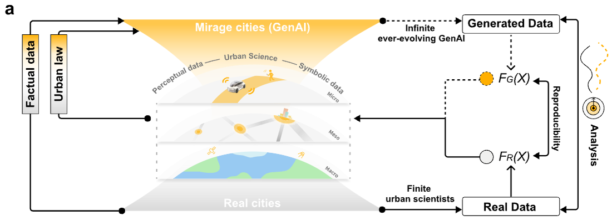
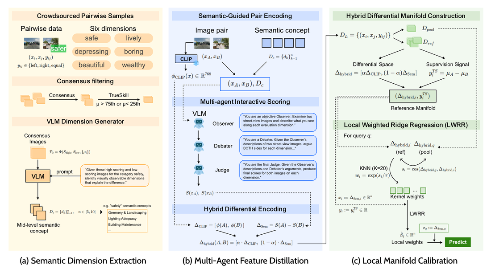

Culturally Uneven Urban Perception in Large Language Models
Under review at Nature Cities, 2026
Hi! I am Rong Zhao, an MRes student at University College London, expected to complete my degree in Fall 2026.
My research interests include large language models for urban and social science, agentic AI, and vision-language models.
I am currently seeking Ph.D. opportunities for Spring/Fall 2027 in related areas.

Culturally Uneven Urban Perception in Large Language Models
Under review at Nature Cities, 2026

GenAI Models Capture Urban Science but Oversimplify Complexity
Under review at Nature Communications, 2025

UrbanAlign: Post-hoc Semantic Calibration for VLM-Human Preference Alignment
Under review at ECCV, 2026